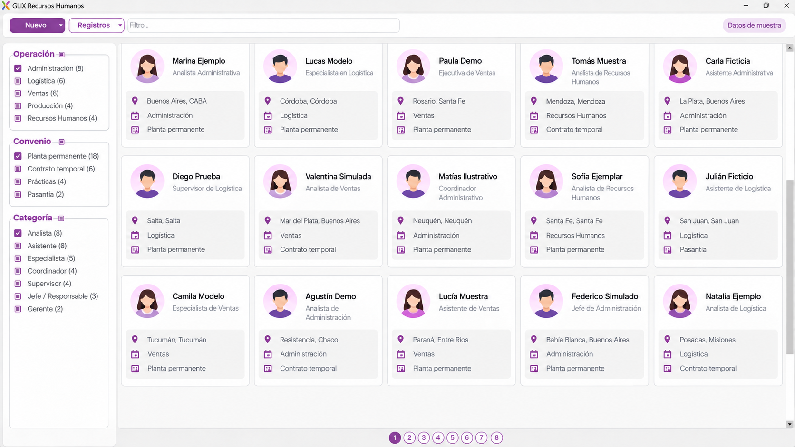

Personal
Un espacio del ERP dedicado a la información y la gestión administrativa de las personas de la empresa.
Personal, asistencias, sueldos, licencias y sanciones reunidos en el área de Recursos Humanos de GLIX.
Consultar RRHHRecursos Humanos forma parte del sistema de gestión GLIX y contempla las tareas centrales de administración de personal.
La información del equipo se organiza alrededor de cinco temas: datos del personal, presencia, remuneraciones, licencias y sanciones.

El módulo incluye la administración de personal como punto de partida para el trabajo de Recursos Humanos.
Un espacio del ERP dedicado a la información y la gestión administrativa de las personas de la empresa.
Recursos Humanos se presenta como una de las áreas de GLIX junto con transporte, proveedores y ventas móviles.
El módulo contempla las asistencias dentro de la administración de personal, junto con las demás novedades del equipo.
Seguimiento de la asistencia del personal como parte del trabajo habitual de Recursos Humanos.
La asistencia convive en el mismo módulo con sueldos, licencias y sanciones.
GLIX incluye la administración de sueldos entre las funciones de Recursos Humanos.
Gestión de la información salarial dentro del área de personal.
Contactanos para revisar en una demostración cómo se adapta este módulo a tu proceso de sueldos.
La gestión de estas novedades completa el conjunto de funciones de Recursos Humanos presentado para GLIX.
Administración de licencias del personal dentro del módulo.
Registro y gestión de sanciones vinculadas al personal.
Escribinos para ver el alcance del módulo en una demostración.